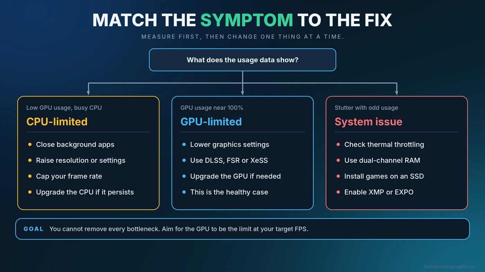

How to Fix a PC Bottleneck and Boost FPS: Step by Step
Stop throwing money at hardware blindly. Follow this diagnostic workflow to identify the exact cause of your PC bottleneck and learn the practical steps to fix it through software tweaks, system tuning, and strategic upgrades.

The Quick Answer
You cannot completely eliminate a bottleneck. Something in your PC will always reach its maximum capacity first. The goal of "fixing" a bottleneck is to shift the limitation to your graphics card (GPU) while ensuring the overall frame rate meets your monitor's refresh rate.
If you are experiencing stuttering or low FPS, you must first identify the culprit using monitoring tools. Once identified:
- To fix a CPU bottleneck: Close background apps, increase your resolution/graphics settings (to slow the GPU down), cap your frame rate, or upgrade your processor.
- To fix a GPU bottleneck: Lower graphics settings, utilize upscaling technologies like DLSS or FSR, or upgrade your graphics card.
- To fix systemic stuttering: Check for thermal throttling, ensure you have enough dual-channel RAM, and verify the game is installed on a fast SSD.
Before You Start: Get a Baseline
Before changing anything, record where you stand. Enter your processor and graphics card into a PC bottleneck calculator to see the estimated balance for your resolution, then note your actual frame rate and usage in one repeatable game scene. You now have two reference points: an estimate and a measurement.
If you are comparing tools, here is what makes a bottleneck calculator trustworthy:
- It explains its method. A good tool says how it reaches a number instead of just showing a score. You can read how ours works in the methodology section.
- It asks for resolution and use case. The same CPU and GPU behave very differently at 1080p and 4K.
- It stays honest about limits. An estimate is not a benchmark, and any tool claiming otherwise should be treated with caution.
- It uses current hardware. Outdated databases give misleading answers for new parts.
Step 1: Match your symptoms to the right fix
This guide is about fixing a bottleneck. If you have not yet measured what is limiting your PC, start with our step-by-step guide to checking a PC bottleneck, or run the PC bottleneck calculator for a first estimate of your CPU and GPU pairing. Then match what you see to one of the scenarios below.
As a rule of thumb: GPU usage near the maximum points to Scenario A, low GPU usage with a busy CPU core points to Scenario B, and full RAM or long freezes point to Scenario C.
Scenario A: The GPU Bottleneck
Diagnosis: Your GPU Usage is consistently at 95% to 100%. CPU usage is relatively low.
Is this a problem? Generally, no. This is the ideal state for a gaming PC. However, if your frame rate is too low to be playable (e.g., you are getting 30 FPS and want 60 FPS), you need to act.
How to fix it:
- Lower Graphics Settings: Start by turning down the most demanding settings: Volumetric lighting, shadows, and ray tracing.
- Enable Upscaling: If your game and hardware support it, turn on NVIDIA DLSS, AMD FSR, or Intel XeSS. This renders the game at a lower resolution and upscales it, providing a massive FPS boost with minimal visual loss.
- Overclocking: You can use MSI Afterburner to apply a modest overclock to your GPU core and memory clocks. This might yield a 5-10% performance increase.
- The Hardware Fix: If software tweaks aren't enough, the only solution is to upgrade to a more powerful graphics card.
Scenario B: The CPU Bottleneck
Diagnosis: Your GPU Usage is dropping below 90% (sometimes severely, like 50-60%). Meanwhile, your overall CPU usage is high, or more specifically, one or two individual CPU cores are pinned at 100%.
Is this a problem? Yes. This usually results in severe stuttering, terrible 1% lows, and a generally unplayable experience because the CPU cannot keep up with the GPU.
How to fix it (Without Buying Hardware):
- Increase Resolution and Settings: This sounds entirely backwards, but it works. If you are playing at 1080p on Low settings, your GPU is finishing frames too fast for the CPU to handle. By increasing settings to "Ultra" or moving to a 1440p monitor, you force the GPU to work harder and take longer. This lowers the total FPS, giving your struggling CPU time to catch its breath, resulting in a much smoother, stutter-free experience.
- Kill Background Processes: Web browsers, Discord, RGB control software, and game launchers all eat CPU cycles. Close everything you don't absolutely need while gaming.
- Cap Your Frame Rate: If your CPU maxes out trying to push 120 FPS, cap your frame rate at 90 FPS using the game menu or the NVIDIA/AMD control panel. This instantly relieves the CPU bottleneck and stabilizes frame pacing.
The Hardware Fix: Upgrade to a modern CPU with better single-core performance. Note that this often requires buying a new motherboard and RAM as well.
Scenario C: The RAM Bottleneck
Diagnosis: Your System RAM Usage is hitting 95-100% of your total capacity (e.g., using 15.5GB out of 16GB). The game freezes completely for seconds at a time.
Is this a problem? Yes, a severe one. When RAM is full, Windows uses your storage drive as memory, which is drastically slower.
How to fix it:
- Close memory hogs: Shut down Google Chrome.
- The Hardware Fix: Buy more RAM. Upgrading from 16GB to 32GB is relatively cheap and instantly solves capacity issues. Ensure you buy an identical stick, or better yet, a matched kit, and install them in the correct slots to utilize dual-channel memory. Read more in our RAM bottleneck guide.
Step 2: Identifying the Silent Killer (Thermal Throttling)
Sometimes, your hardware is perfectly matched, but your performance is still terrible. If your CPU or GPU temperatures exceed their safe operating limits (usually above 90°C for CPUs and 85°C for GPUs), they will intentionally slow down to prevent themselves from melting. This is called thermal throttling. For a hot graphics card, undervolting your GPU can lower temperatures without losing FPS.
A thermally throttled Core i9 will perform worse than a properly cooled Core i5.
How to fix thermal throttling:
- Clean Your PC: Dust is an insulator. Turn off your PC, take it outside, and use compressed air to thoroughly clean the CPU heatsink, GPU fans, and case intakes.
- Adjust Fan Curves: Use your BIOS or motherboard software to make your fans spin faster at lower temperatures.
- Improve Case Airflow: Ensure you have fans bringing cool air in (intake, usually at the front) and fans blowing hot air out (exhaust, usually at the back/top).
- Repaste Components: If your PC is several years old, the thermal paste between the CPU and cooler may have dried out. Removing the cooler, cleaning the old paste, and applying fresh thermal compound can drop temperatures by 10-20°C.
Step 3: Storage and System Hygiene
If neither your CPU, GPU, nor RAM is maxed out, and temperatures are fine, but you still experience stuttering, check your storage.
- Move Games to an SSD: Modern games stream assets (textures, models) directly from the storage drive while you play. A mechanical Hard Drive (HDD) cannot read data fast enough, resulting in "traversal stutter" as you move through a game world. Every modern game must be installed on a Solid State Drive (SSD), preferably an NVMe drive.
- Update Drivers: Ensure you have the latest NVIDIA or AMD graphics drivers installed. Driver updates often contain specific optimizations for new games that can instantly resolve performance bugs.
Step 4: Remove software and BIOS limits before buying anything
Many systems run below their potential because of settings, not hardware. Check these before spending money:
- Enable XMP or EXPO: RAM often runs at a slower default speed until the memory profile is enabled in the BIOS.
- Confirm your monitor refresh rate: in Windows display settings and your GPU control panel, make sure the monitor is not still set to 60 Hz.
- Use the graphics card output: the display cable should be plugged into the graphics card, not the motherboard.
- Check the Windows power mode: on a laptop, plug in the charger and use a performance-oriented power mode while testing — our gaming laptop bottleneck guide explains why power limits hit laptops so hard.
- Use a frame limiter: a cap slightly below your refresh rate can give steadier frame pacing than an unlimited frame rate.
- Update chipset drivers and, carefully, the BIOS: follow your motherboard maker's instructions, because an interrupted BIOS update can cause problems.
- Reinstall the graphics driver cleanly if a problem began after a driver update or if games crash or stutter unexpectedly.
Change one setting at a time and re-test the same scene so you can tell which change helped.
Tune Graphics Settings for the Limit You Found
Settings affect the CPU and GPU differently, so the right change depends on what your test showed.
- GPU-limited: lower heavy settings such as shadows, volumetric effects and ray tracing, or enable DLSS, FSR or XeSS. Upscaling reduces the internal resolution, which relieves the graphics card. See our guide to DLSS, FSR and frame generation. Our guide to how ray tracing affects CPU and GPU load shows which settings cost the most.
- CPU-limited: raising resolution or visual quality can give the GPU more work, which evens out the load and often improves smoothness. Settings that scale with CPU work, such as crowd density, view distance and simulation detail, are the ones to lower.
- Frame cap: a cap just below your monitor refresh rate can give steadier frame pacing than an unlimited frame rate, especially when the CPU is struggling.
Change one thing at a time and repeat the same test scene so you know what helped.
Step 5: If you must upgrade, upgrade in the right order
Spend where the evidence points, starting with the cheapest fix that addresses your measured limit:
- Settings and configuration (free): resolution, upscaling, frame cap, XMP/EXPO, dual-channel memory.
- Storage: move games from a hard drive to an SSD if loading or traversal stutter is the problem.
- RAM: add capacity only if usage is actually reaching the limit during play. See the RAM guide and whether 16GB is enough.
- Cooling: improve airflow or the cooler if temperatures cause throttling.
- GPU or CPU: upgrade the component your testing showed is the limit, and check platform compatibility first with our upgrade checklist.
After Each Change: Measure Again
After each stage, repeat the same test and compare against your baseline. You are looking for the outcomes that matter in daily use:
- Better CPU usage, with no single thread permanently pinned.
- Higher GPU performance, with GPU usage close to its limit where you want the GPU to be the bottleneck.
- Smoother gameplay and steadier 1% lows, not just a higher average FPS.
- Stable frame rates over a long session, without sudden drops from heat or memory.
Average FPS can look fine while stutter ruins the experience. Pay attention to 1% lows and frame-time consistency. Our stuttering guide explains how to read them.
Common Mistakes to Avoid
- Buying a new GPU when the real limit is a frame cap or a slow drive.
- Changing five settings at once and not knowing which one helped.
- Trusting a single calculator percentage as a verdict instead of a guide.
- Testing in a menu or loading screen rather than in gameplay.
- Ignoring temperatures and then blaming the hardware.
Conclusion
Fixing a PC bottleneck is an exercise in data-driven troubleshooting. By monitoring your CPU, GPU, RAM, and temperatures, you can stop guessing and start fixing. Always attempt the software solutions—adjusting settings, capping frame rates, and cleaning your PC—before spending hundreds of dollars on a hardware upgrade.
If you do decide it is time to upgrade, make sure you use a bottleneck calculator to ensure your new components will work in harmony with the rest of your system.
Frequently Asked Questions
Can you completely remove a PC bottleneck?
No. There will always be a component that hits its maximum limit first. If you remove all bottlenecks, you would have infinite FPS. The goal is to ensure the bottleneck is placed on the component that provides the smoothest experience, which is usually the GPU.
How do I fix a CPU bottleneck without buying a new processor?
You can reduce a CPU bottleneck by increasing your game's graphics settings or resolution. This gives the GPU more work to do, lowering the overall frame rate, which gives the CPU more time to process data. You should also close background applications and consider capping your frame rate.
Why is my PC stuttering if my CPU and GPU are both below 100% usage?
This usually indicates an issue outside of raw processing power. You may be experiencing thermal throttling, running out of RAM (causing system swapping), running out of VRAM, or trying to play a modern game installed on a slow mechanical hard drive instead of an SSD.
Does capping FPS improve performance?
Yes, specifically in CPU bottleneck scenarios or when encountering thermal throttling. Capping the FPS slightly below your maximum prevents the CPU from maxing out, which vastly improves frame-time consistency and eliminates sudden, jarring stutters.
How does thermal throttling affect my bottleneck?
Thermal throttling occurs when a component gets too hot and intentionally slows itself down to prevent damage. A thermally throttled high-end GPU will perform like a budget GPU, artificially creating a massive bottleneck. Improving cooling will instantly restore performance.
Can a bottleneck calculator help me boost FPS?
It helps you plan. A calculator estimates how well your CPU and GPU match so you can decide what to upgrade or compare, but real FPS gains still depend on your game, settings and testing.
Why did my FPS not improve after changing settings?
The setting you changed may not affect the real limit. If the CPU is the limit, lowering GPU-heavy settings will not help. If a frame cap or low refresh rate is the cause, graphics settings will not matter either.
Is it worth upgrading just to remove a small bottleneck?
Usually not. A small mismatch rarely changes the experience, and the money is better spent where measurements show a clear limit, such as a GPU at full load with FPS below your target.
Sources
Official documentation and tools referenced in this guide: